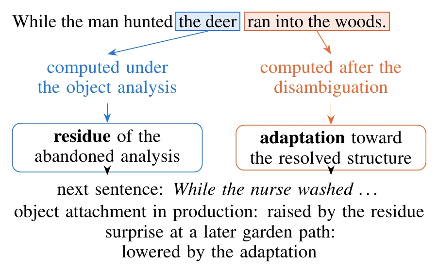
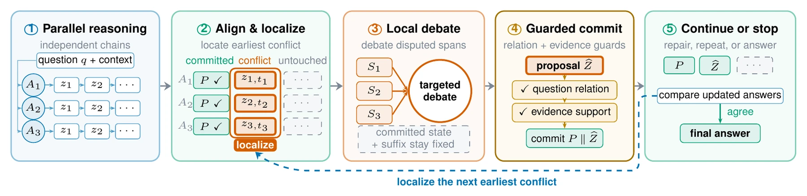

Language models
Understanding language model capabilities and exploring how post-training can improve them.
Research / directions & papers
My research covers language models and how post-training improves them, agent systems for practical tasks and character-driven interaction, and how multiple agents communicate and collaborate. Papers and preprints are listed below.
Understanding language model capabilities and exploring how post-training can improve them.
Building capable agents for practical tasks and exploring how character-driven agents behave and interact.
Exploring how multiple agents can communicate and work together effectively.

After a garden-path sentence, language models keep using the analysis they gave up. Across 24 open models from 124M to 70B, this residue shapes later text, and activation patching traces it to states computed before the disambiguation.
Reading "While the man hunted the deer ran into the woods" requires giving up the analysis in which "the deer" is the object of "hunted". People who have just read such a sentence still produce more transitive structures, so the abandoned analysis primes later language. We ask whether language models keep using an analysis they have abandoned, and what in the model carries it. In 24 open models from 124M to 70B parameters, a garden-path sentence leaves two traces in the context. A residue of the abandoned analysis raises later object attachment, by about three quarters of the effect of a sentence in which the noun phrase really is an object, and it appears in sampled text, on held-out and human-normed items and for a second type of garden path. An adaptation toward the resolved structure scales with the sentence's disambiguation error and acts mainly on comprehension-like measures. Activation patching separates the two. Later text reads the residue from the role information in the noun phrase's states, which were computed under the object analysis before the disambiguation, and replacing these states removes almost all of the residue in the 32B and 70B models. The adaptation is read from the states that processed the disambiguation. Overridden statements show the same persistence (a corrected value keeps pulling later predictions in 8 of 9 models), and in most models the pull is carried by the positions after the statement. Finally, the human paradigm transfers only with controls for punctuation, because the models also write garden-path sentences themselves, which reverses the paradigm's raw statistic.
@article{ding2026abandoned,
title = {Language Models Keep Abandoned Analyses: Residue and Adaptation after Garden-Path Sentences},
author = {Ding, Xiang},
journal = {arXiv preprint arXiv:2610.36797},
year = {2026}
}
Agents debate only the earliest step where their reasoning chains disagree, and a guarded commit adds the repair to a shared state. Evaluated on four multi-hop QA benchmarks with ten backbone models.
Multi-agent debate commonly exchanges complete rationales even when disagreements concern only a few intermediate claims. We introduce Localized Multi-Agent Debate (LMAD), an inference-time protocol that represents agent rationales as nodes, locates their earliest conflict, and restricts debate to the corresponding local segments. Guarded resolution extends a shared committed state so that later conflicts can be addressed without reopening accepted steps. We evaluate LMAD on four multi-hop question-answering benchmarks using ten backbones from four model families. Our method achieves the highest macro-averaged judge accuracy across all ten backbones, outperforming the strongest conventional baseline by up to 7.20 percentage points.
@article{gao2026reasoning,
title = {Where Reasoning Diverges: Localized Multi-Agent Debate for Multi-Hop Question Answering},
author = {Gao, Weijun and Ding, Xiang and Liu, Haoyang and Xing, Tiancheng},
journal = {arXiv preprint arXiv:2608.01463},
year = {2026}
}